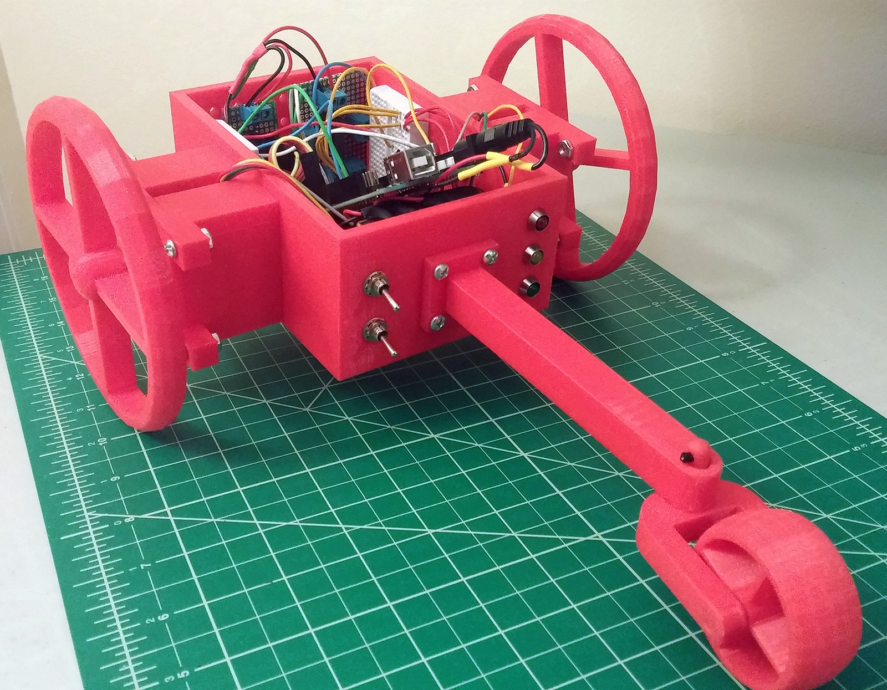
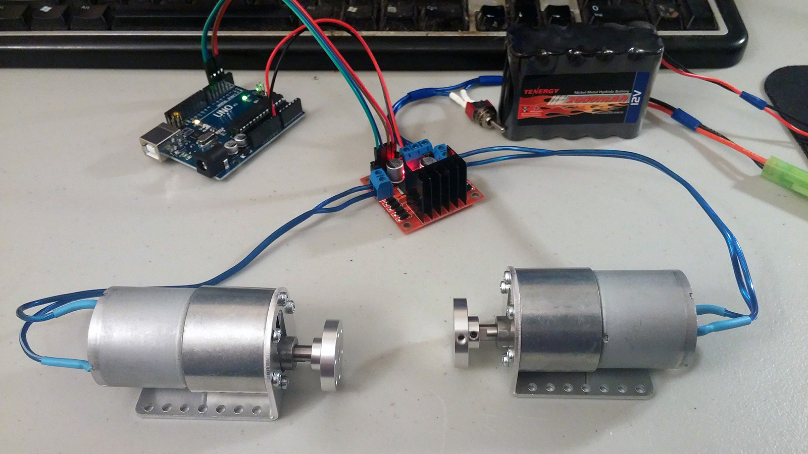
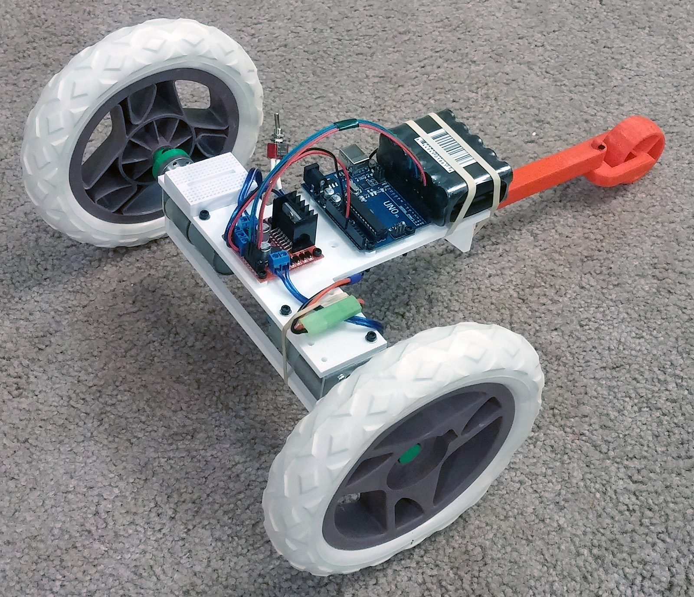
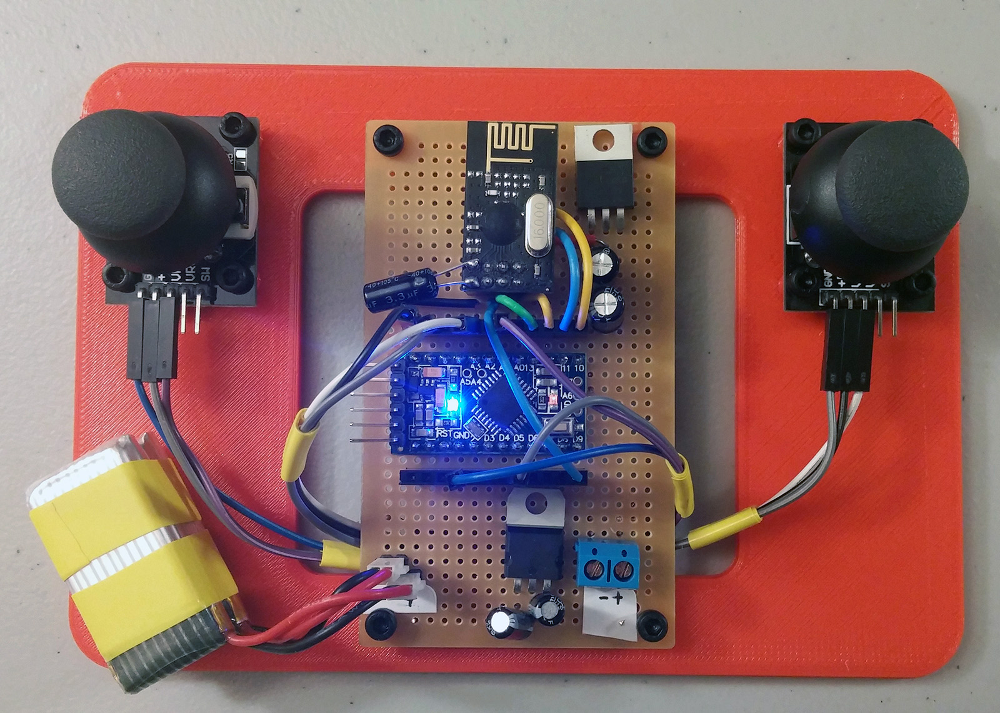
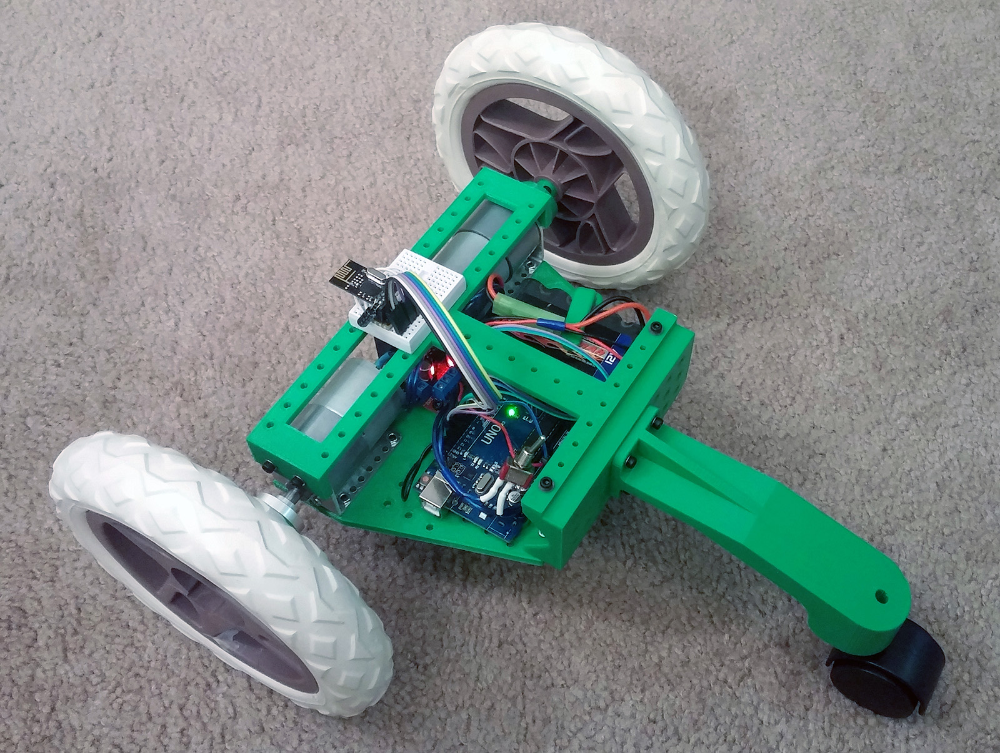
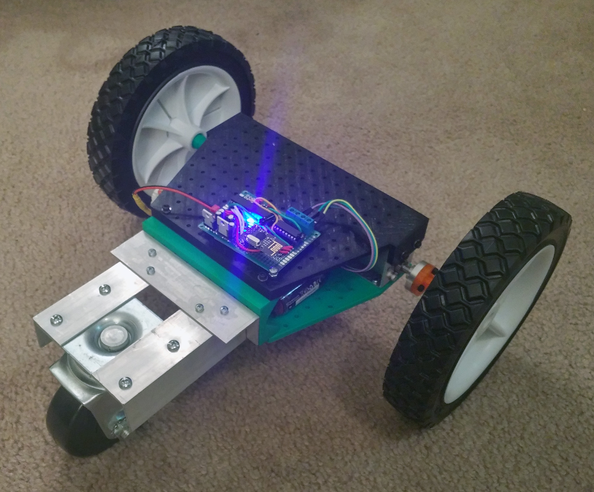
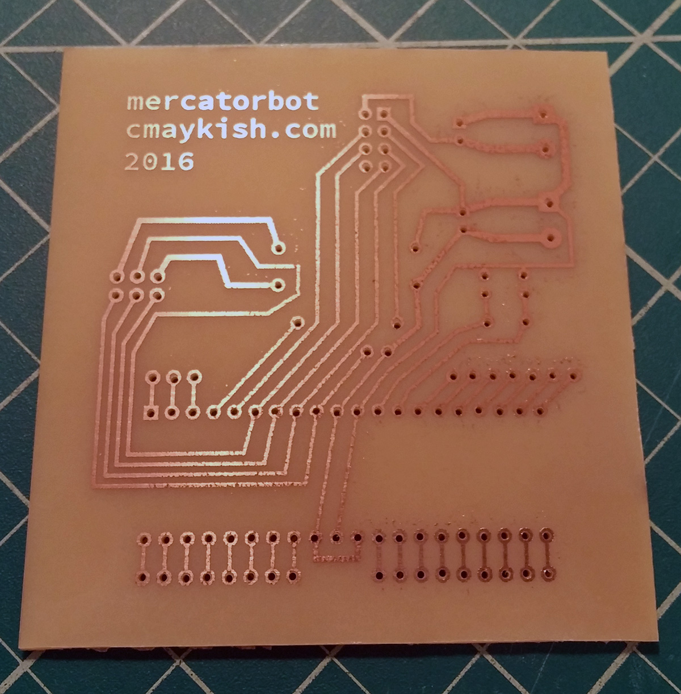
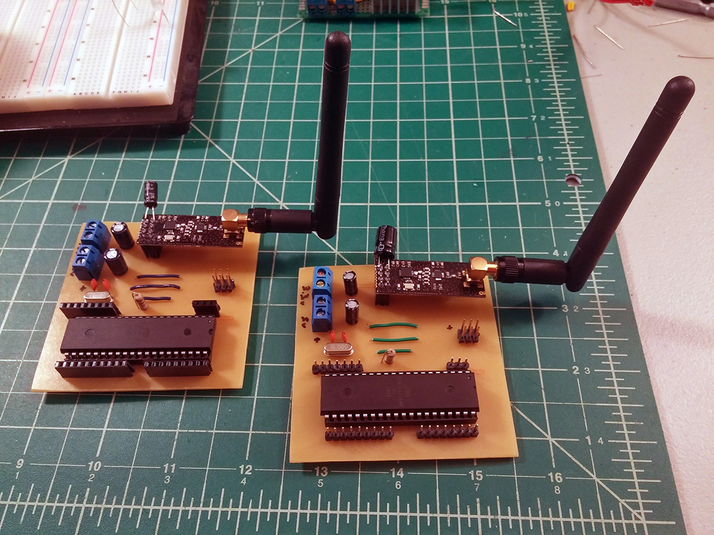
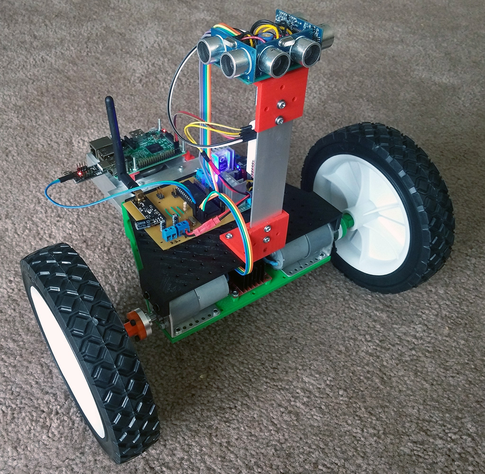

2018-01-24
Mercator is the end result of my first foray into robotics construction. It changed form often and dramatically as I learned things the hard way. It is remote-controlled with a custom NRF24L01 radio design and it has some crude ultrasonic distance sensing which it uses to feed data to a web-based control panel for visualizations.
It’s hard to call Mercator a robot, it’s really more of a slow remote control car with some sensors, but I learned a lot about radio control circuits and the limits of 3D printing along the way.
This is where Mercator started: fully 3D-printed, stepper motors for the drive wheels, some L293 H-bridges, and an Arduino Mega crammed into the arbitrarily-sized body. I quickly realized a few problems at this stage.
In spite of the glaring design problems, it drove around on the floor and I was pretty excited. I could see the potential.
After doing the research on robot mechanics that I should have already done, I came to the conclusion (along with the rest of the robotics world) that DC motors and gearboxes are the way to go for drivetrains. I bought this pair of 12v 100RPM gearmotors from Pololu and along with a cheap NiMH battery and L298 breakout board, I had programmable motor control.
The new motors and wheels warranted a new design for the chassis. I decided to forego the boxy design this time. Saving some printer filament and allowing me a bit more flexibility until I settled on the hardware I wanted to include.
Up to this point, Mercator hadn’t been under my control or its own. It just drove in a straight line or figure 8. I remedied this with a pair of NRF24L01 radios – one wired to the Arduino on board and another on a controller I rigged up. This gave me simple tank-style controls and remained as my main method of driving robots for some time.
Getting these chips working was a significant effort. A combination of bad parts, shoddy wiring on my end, and out-of-date Arduino code examples turned this into a major debugging effort. I eventually put together a simple Arduino sketch for both the receiver and transmitter side to save myself the hassle of having to relearn this every time I came back to it. That code is available on GitHub.
The third iteration of the Mercator chassis was finally starting to looked planned out instead of hacked together. Most of the components fit inside the outer shell. The caster wheel on the back (yes, that’s from an office chair) could rotate freely through 360° rather than getting stuck on the tail if it drove in reverse. The body was also parallel with the ground which becomes important later when the sensors get added.
Also on display here is the radio control chip. Mercator was now fully controllable from at least 50 feet away (much further depending on interference levels on the 2.4GHz spectrum).
One lingering design flaw was the weight distribution. With the heavy motors and battery all the way at the front, the drive torque was enough to flip the robot over if you changed directions from forward to reverse quickly enough.
I “solved” the weight distribution problem by replacing the light plastic tail and caster with a huge caster and aluminum tail. This wasn’t particularly elegant, but it stopped it from flipping over. I also upgraded the wheels once again. They’re small garden trailer wheels, but they’re a lot heavier and grippier than the foam wheels. The 100RPM motors are quite torquey for their size and with these wheels, Mercator had no trouble driving smoothly on any surface.
Other updates here: top shell hides the internal electronics and provides loads of mounting holes for extra hardware. I also combined the AVR microcontroller, NRF24 radio and some power management onto one board, saving some space and increasing the reliability of my connections compared to breadboarding.
About this time I purchased some equipment to etch my own PCBs. This is really nice to do when you’re sure a design won’t change. Personally, I don’t think etching them is worth the hassle for prototypes. I found it was almost always faster just to solder it to perfboard.
This is an upgraded version of the main controller board – bigger AVR chip (ATmega1284P), more pinouts, and I moved the voltage regulators off board (there’s a dedicated power supply board now). I made two copies because I had started another project by this point with the intention of reusing some of the controller code. That never really happened, but it was good practice making PCBs.
Here’s where Mercator ended up… After some board upgrades and indecisive wiring, I added some ultrasonic distance sensors and a Raspberry Pi. The sensors were controlled by the microcontroller which reported distance measurements to the Raspberry Pi over a serial connection. Running on the Pi was a small Node.JS application that hosts a webpage where the distances were converted to a visual representation of Mercator’s position. It was pretty cool to drive around and watch the chart update in real-time. The goal for this was to add in some mapping and positioning abilities, but I didn’t realize the complexity of that problem or the complete inadequacy of my sensor arrangement to provide that.
Overall, I’m actually pretty happy with Mercator. It’s far from perfect; it’s actually quite broken in many ways, but it taught me so much about a huge array of topics I never would have considered otherwise. It also sparked a new passion and got the ball rolling on so many other ideas. I often find myself learning something cool midway through a project, diving into that rabbit hole a bit further, and ending up half way through another design before I come back around and apply it to the original problem. Or in the case of this project, the list of cool ideas piled up to the point where I just retired it to pursue them with a clean slate. I think that’s okay though. Not every project has to be completed to be a success.